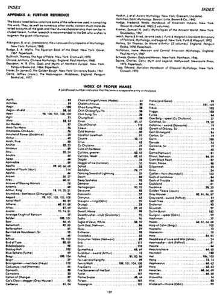
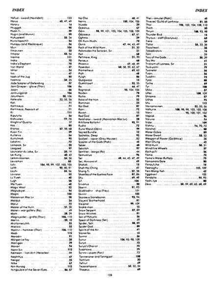

专名索引（完整英文原页） · Index of Proper Names (Complete English Facsimile)
原书说明：粗体页码表示该专名在书中有独立条目。 下列两幅原页包含完整专名索引，保留英文名称、原印刷页码和粗体区别；尚未逐项转录为中文索引，也未把这些页码转换为电子版链接。第一幅上半部同时为上述书目的原文。


原书说明：粗体页码表示该专名在书中有独立条目。 下列两幅原页包含完整专名索引，保留英文名称、原印刷页码和粗体区别；尚未逐项转录为中文索引，也未把这些页码转换为电子版链接。第一幅上半部同时为上述书目的原文。

